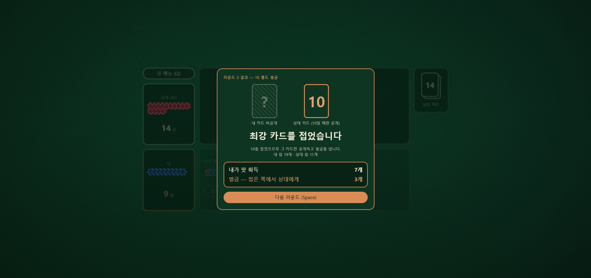
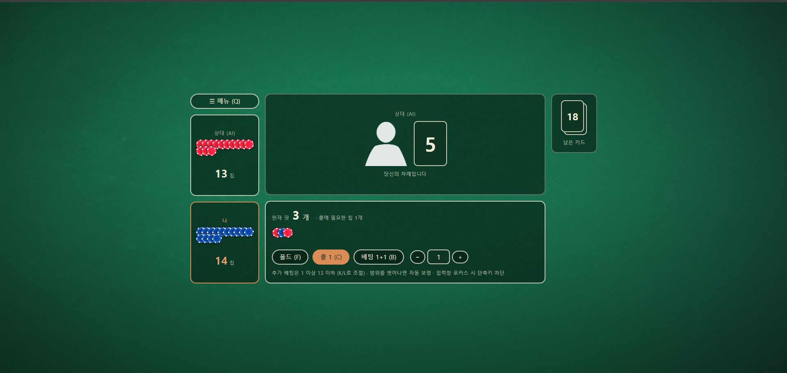
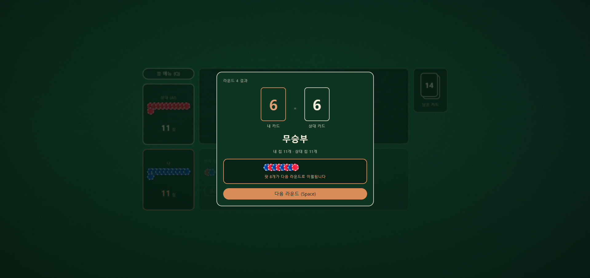

- 1 : 1플레이어 대 AI
- 5~10분한 판 소요 시간
- 설치 X브라우저에서 바로
- 규칙 1장배우는 데 2분
특수 규칙
폴드에도 값이 있다
인디언 포커에 규칙 하나를 더했습니다. 폴드한 사람의 카드가 10이었다면, 칩 3개를 상대에게 넘깁니다. 문제는 자기 카드를 볼 수 없다는 것입니다. 겁이 나서 접는 그 순간에도, 이마 위의 카드가 최강 패일 수 있습니다. 그래서 이 게임에서는 접는 선택 자체가 도박입니다.
벌금 칩은 팟을 거치지 않고 상대에게 곧장 넘어갑니다. 칩이 사라지는 경로가 없으므로 판 위의 칩은 언제나 30개로 유지되고, 한쪽이 잃은 만큼 다른 쪽이 정확히 가져갑니다.
-
10
벌금이 붙는 카드. 덱에서 가장 강한 숫자
-
3
10을 들고 폴드했을 때 상대에게 넘기는 칩
-
30
판 위의 총 칩. 시작부터 끝까지 변하지 않는다

한 라운드
카드를 받고, 걸고, 오픈한다
여섯 단계가 끝나면 칩을 정산하고 다음 라운드로 넘어갑니다. 한쪽 칩이 0이 되면 그 자리에서 게임이 끝납니다.
-
1
카드 분배
1~10이 각 2장씩 든 20장 덱에서 한 장씩 뽑습니다. 서로 상대 카드만 보입니다. 덱이 비면 20장으로 다시 채웁니다.
-
2
기본 베팅
양쪽이 칩 1개씩을 팟에 넣습니다. 지난 라운드에서 이월된 칩이 있으면 여기에 합산됩니다.
-
3
선 결정
동전 던지기로 먼저 행동할 쪽을 정합니다. 선은 매 라운드 다시 정해집니다.
-
4
선의 행동
체크하거나 베팅합니다. 베팅 상한은 자기가 가진 칩 전부입니다. 낼 칩이 없어도 라운드는 진행됩니다.
-
5
후의 응수
폴드 · 콜 · 레이즈 중 하나. 레이즈하면 턴이 다시 상대에게 넘어갑니다. 맞출 칩이 0일 때는 폴드가 없습니다 — 공짜로 넘길 수 있으니까요.
-
6
정산
콜이면 오픈해서 높은 숫자가 팟을 가져갑니다. 같으면 팟 전부가 다음 라운드로 이월됩니다. 폴드면 남은 쪽이 팟을 가져가고, 접은 카드가 10이었다면 벌금 3개가 더 넘어갑니다.
칩이 모자라면 올인
상대가 10을 걸었는데 내 칩이 4개뿐이어도 전부 걸고 오픈할 수 있습니다. 상대가 초과로 낸 칩은 비교 전에 되돌려주므로, 올인해서 이겨도 손해 보지 않습니다.
무승부는 다음 판으로
같은 숫자가 나오면 아무도 팟을 가져가지 않고 통째로 이월됩니다. 다만 이월 후 어느 한쪽이 칩을 잃고 못 버티는 상황이면 이월을 취소하고 이번 라운드에 낸 칩을 각자 돌려받습니다.
상대
AI도 당신의 카드만 봅니다
AI는 자기 카드를 읽지 않습니다. 보이는 것은 당신의 카드뿐이고, 그것만으로 승산을 계산해 베팅합니다. 그래서 AI의 베팅 크기는 곧 당신 카드에 대한 정보가 됩니다.
| AI에게 보이는 내 카드 | AI의 승산 판단 | 기본 행동 | 베팅 크기 |
|---|---|---|---|
| 1 – 3 | 매우 높음 | 공격적으로 베팅 | 3~5 개 |
| 4 – 7 | 반반 | 콜 또는 소액 베팅 | 1~2 개 |
| 8 – 10 | 낮음 | 콜, 또는 폴드 | 1 개 |
15% 확률의 블러프
AI는 여섯 번에 한 번꼴로 기본 행동을 뒤집습니다. 낮은 카드를 보고도 접고, 높은 카드를 보고도 크게 겁니다. 큰 베팅이 곧 내 카드가 낮다는 증거가 되지 못하는 이유입니다.
역이용할 수 있습니다
낮은 카드를 든 상대에게 일부러 약하게 걸어 콜을 유도하는 플레이가 가능합니다. 정보는 양쪽으로 흐르고, 흘리는 정보를 고르는 것도 실력입니다.
화면
화면에 있는 것은 이게 전부입니다
상대의 카드, 양쪽 칩 무더기, 팟, 남은 카드. 규칙이 짧은 만큼 판에 놓인 것도 적습니다. 그리고 어디에도 내 카드는 없습니다.


마우스로도, 키보드로도
모든 행동에 단축키가 있습니다. 베팅 수량 입력창에 커서가 있을 때는 단축키가 잠기므로 숫자와 충돌하지 않습니다.
자주 묻는 것
인디언 포커와 뭐가 다른가요?
기본 뼈대는 같습니다. 자기 카드를 못 보고 상대 카드만 보이죠. 여기에 규칙을 하나 더했습니다 — 폴드한 사람의 카드가 10이면 칩 3개를 상대에게 넘깁니다. 이 한 줄 때문에 "일단 접고 보자"는 선택이 안전하지 않게 됩니다.
10을 들고 접었는데 칩이 2개밖에 없으면요?
가진 칩 전부를 상대에게 넘깁니다. 칩이 0이 되므로 그 자리에서 패배입니다. 벌금을 다 못 낸다고 봐주는 건 없습니다.
무승부가 계속 나오면 팟이 무한정 커지나요?
이월에는 상한이 없습니다. 다만 이월한 뒤 어느 한쪽이 다음 라운드를 버틸 칩이 없으면 이월을 취소하고, 이번 라운드에 각자 낸 칩을 각자에게 돌려줍니다. 판이 멈추는 일은 없습니다.
레이즈 횟수 제한이 있나요?
없습니다. 가진 칩이 곧 상한이라 무한 레이즈는 어차피 불가능합니다.
온라인 대전이 되나요?
지금은 AI와의 1:1만 지원합니다. 설치나 계정 없이 브라우저에서 바로 실행됩니다.
이마 위의 카드가 무엇인지, 한 판이면 알게 됩니다
설치 없이 브라우저에서 바로. 한 판 5~10분.